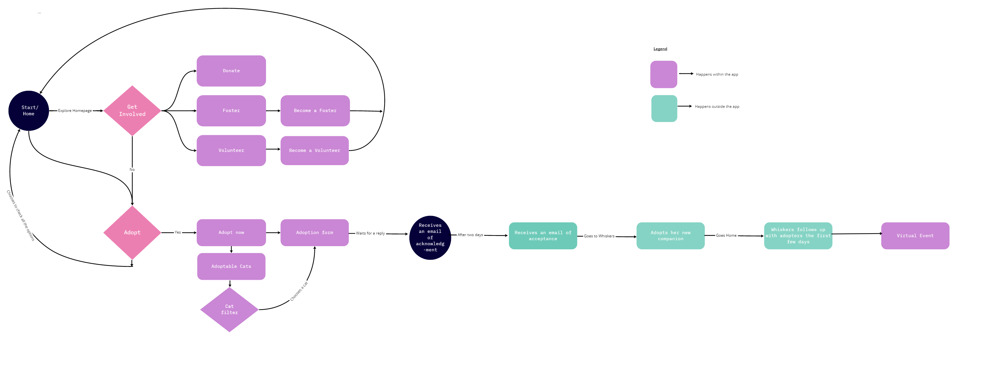

Adoption Place

41%
of the participants chose they adopt pets from shelters and 31% of them adopt pets from adoption agencies
A Non-profit organisation for cats in Utah
Whiskers is a non profit organization in Utah. We redesigned their website to be more user friendly and responsive by implementing Agile methodology throughout the designing process.
Our user research included 30 surveys and 4 user interviews in zoom and also we conducted 1 stake holder interview to learn more about Whiskers organisation.Some of the information we learned includes the following points.
of the participants chose they adopt pets from shelters and 31% of them adopt pets from adoption agencies
of the participants chose they prefer to adopt pets in 1-5years of age.
of the participants has expressed that money is not a factor in adoption or fostering pets
Whiskers was designed to help people learn more about fostering and adoption, encouraging them to be part of Whiskers. We have observed that the Whiskers website isn’t meeting the goals of involving more people, which is causing less adopters, fosters, and volunteers to continue the service. How might we improve Whiskers so that our customers are successful based on the improved design of the Whiskers’ website?

During Low Fidelity User testing with our Low Fidelity Prototype, we discovered that imagery and heartfelt photographs of the cats were key in communicating the concept of a cat adoption website as well as extracting sympathy from the users.
One main feature that we iterated and added upon in our most recent prototype was a popup box that explained in depth the cat’s personality, medical background, and history. We added this to help ensure Maggie that any questions about the cats would be answered during her feline friend research.
The existing Whiskers website was very bright, text-heavy, and underwhelming with little visual hierarchy and flow.